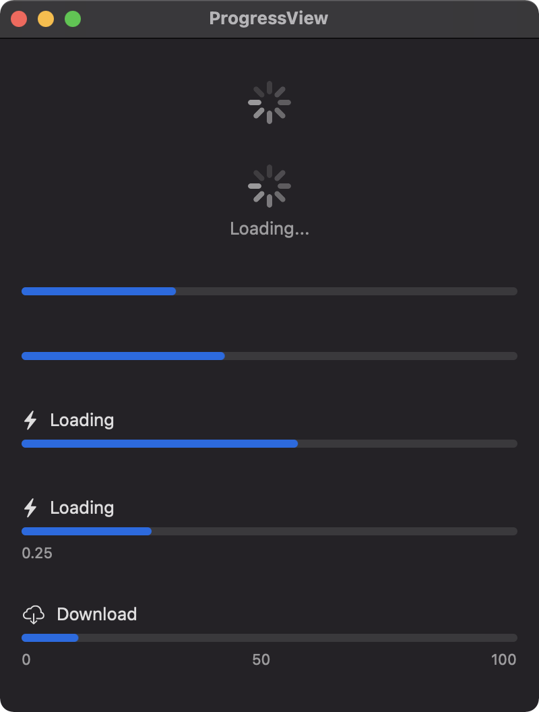
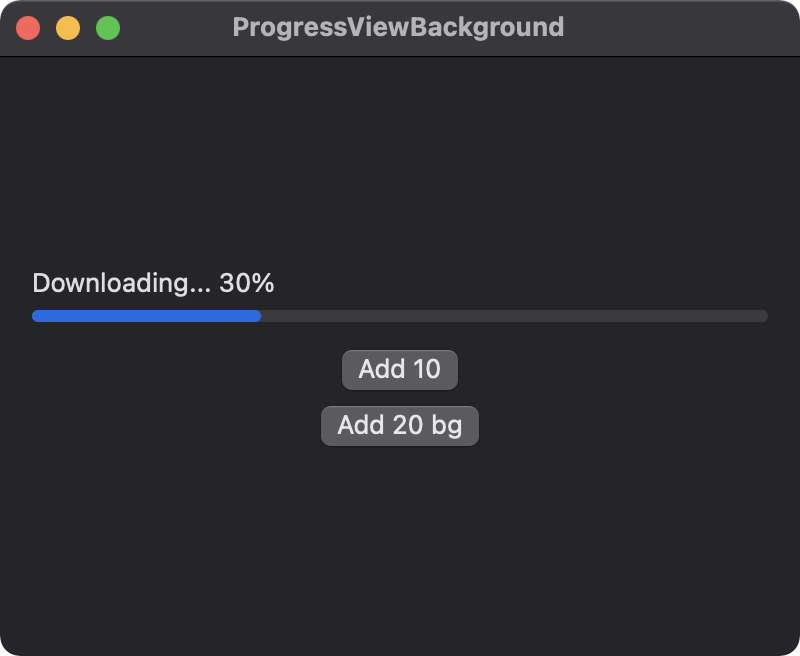

A ProgressView represents completion of a task or the occurance of an activity with an unknown completion time. A default value of 1.0 is used for the total value when tracking completion progress. As the example demonstrates below, different configurations of a progress view are possible.

import SwiftUI
struct ContentView: View {
var body: some View {
VStack(spacing: 30) {
ProgressView()
ProgressView("Loading...")
ProgressView(value: 0.3)
ProgressView(value: 40, total: 100)
ProgressView(value: 0.55) {
Label("Loading", systemImage: "bolt.fill")
}
ProgressView(value: 0.25, label: {
Label("Loading", systemImage: "bolt.fill")
}, currentValueLabel: {
Text("0.25")
})
ProgressView(value: 10.0, total: 100.0, label: {
Label("Download", systemImage: "icloud.and.arrow.down")
}, currentValueLabel: {
HStack {
Text("0")
Spacer()
Text("50")
Spacer()
Text("100")
}
})
}
.padding()
.frame(width: 400, height: 500)
}
}
The next example uses a state variable x to update the progress view by 10 when the "Add 10" button is clicked. A progress view is often associated with a background task; consequently, the progress view must be updated on the main thread. This is demonstrated with the "Add 20 bg" button in the example shown below.

import SwiftUI
struct ContentView: View {
@State private var x = 0.0
var body: some View {
VStack {
ProgressView(
"Downloading... \(String(format: "%.0f", x))%",
value: x,
total: 100.0
)
// Increase progress bar by 10
Button("Add 10") {
if x < 100.0 {
x += 10.0
}
}
// Increase progress bar by 20 using value from background thread
Button("Add 20 bg") {
DispatchQueue.global(qos: .background).async {
let z = 10.0
DispatchQueue.main.async {
if x < 100.0 {
x += 10.0 + z
}
}
}
}
}
.padding()
.frame(width: 400, height: 300)
}
}
Gavin Wiggins © 2025
Made on a Mac with Genja. Hosted on GitHub Pages.